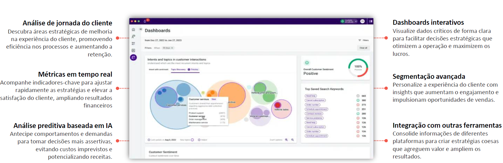

A análise da experiência do cliente da Talkdesk usa IA generativa para extrair insights das interações com o cliente, ajudando os Contact Centers a entender e resolver problemas de atendimento ao cliente de forma eficiente.
Mapeia e visualiza todas as interações do cliente em diferentes canais, identificando pontos de fricção e oportunidades de melhoria.
Monitora KPIs como AHT, FCR e NPS, otimizando o desempenho do atendimento.
Identifica padrões de comportamento e prevê tendências de satisfação.
Visualizações dinâmicas para interpretação de dados e decisões estratégicas.
Permite análises por perfis de clientes, tipos de atendimento e canais.
Conecta-se com CRMs e BI para visão 360° do cliente.
Se diferencia por oferecer análises em tempo real, consolidando métricas de múltiplos canais para uma visão 360° do atendimento. Com inteligência artificial integrada, identifica padrões, prevê tendências e sugere melhorias proativas. Seus dashboards são intuitivos e personalizáveis, permitindo maior flexibilidade do que soluções mais engessadas.
A integração nativa com o Talkdesk reduz complexidade e acelera a implementação. Diferente de ferramentas como Google Analytics, Zendesk Explore e Salesforce Einstein, o CX Analytics foca na experiência do cliente dentro do contact center, entregando insights acionáveis para otimizar operações e satisfação do cliente.
Coleta e análise unificada de dados omnichannel, utilizando IA para identificar tendências, medir KPIs em tempo real e fornecer insights acionáveis para otimizar a experiência do cliente.
Garantir que os dados coletados sejam precisos, completos e bem categorizados para análises confiáveis.
Ajustar dashboards, filtros e relatórios de acordo com as necessidades específicas do negócio.
Conectar o CX Analytics a sistemas como CRM, BI e plataformas de feedback para insights mais completos.
Capacitar administradores, supervisores e agentes para usarem a ferramenta com eficácia.